Leg je vondsten vast op de kaart, houd percelen en eigenaren bij. Jouw vondsten staan op je eigen telefoon, nergens anders. Melden bij PAN doe je zelf, met één klik, zonder los formulier of dubbel typwerk.
Momenteel in besloten test op iOS en Android. Publieke lancering volgt.
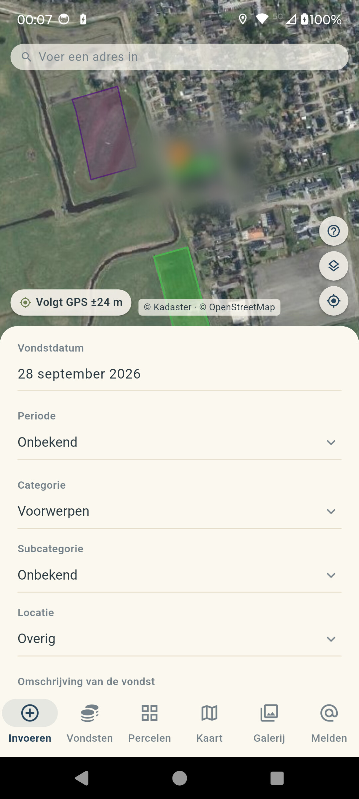
Van je eerste vondst van vandaag tot een archief van jaren zoeken: Zoekapp houdt het overzichtelijk.
Log in met je eigen PAN-account en meld vondsten direct vanuit de app, inclusief foto's en locatie. Volg de status (in behandeling, beschreven, gevalideerd) zonder los in te loggen op de website.
Zie je vondsten, percelen en archeologische aandachtsgebieden op één kaart, met filters op periode en type.
Koppel eigenaren aan percelen, houd bij welke grond je al onderzocht hebt en bel of app rechtstreeks vanuit de app.
Foto's, beschrijving, periode en vindplaats in één scherm, met automatische GPS-locatie en makkelijk terugvindbaar.
Drie stappen, geen overtypen.
Maak een foto, beschrijf de vondst en de locatie wordt automatisch bepaald op de kaart.
Koppel de vondst aan een perceel, houd de eigenaar op de hoogte en bouw je eigen archief op.
Met één tik meld je de vondst bij PAN en volg je de status tot deze gevalideerd is.
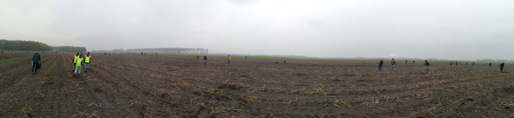
Gemaakt voor dagen zoals deze: samen het veld op, vondsten vastleggen zodra je ze uit de grond haalt.
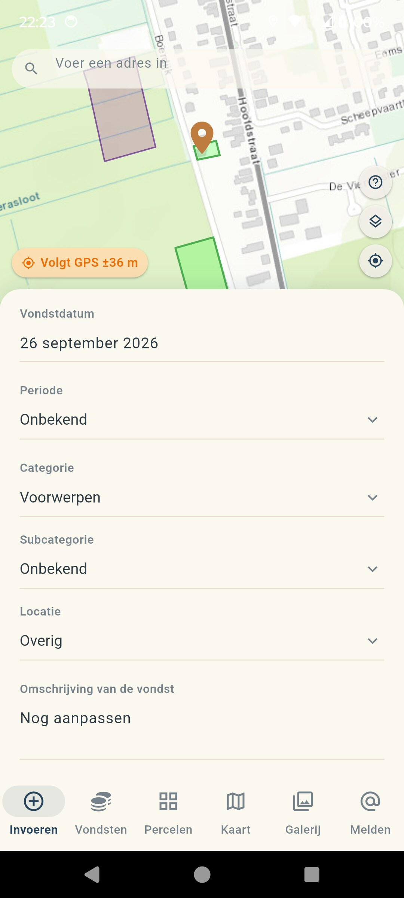
Vondst invoeren op de kaart
Vondst invoeren
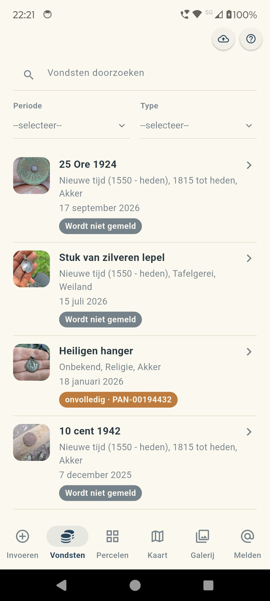
Overzicht van al je vondsten
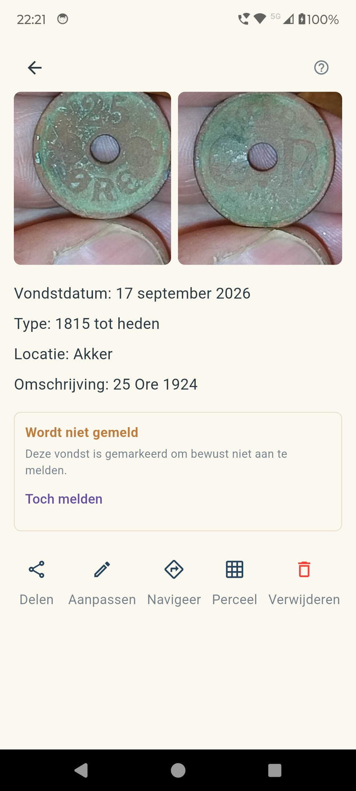
Vondstdetails
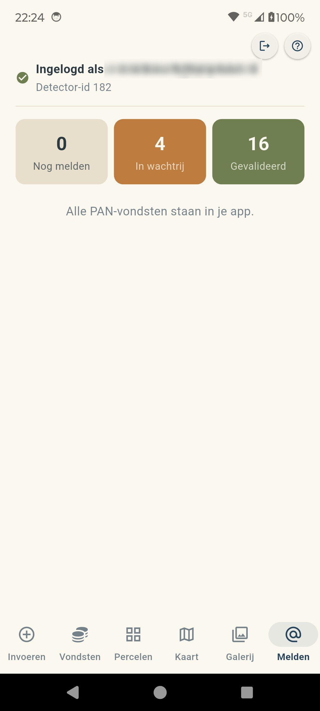
Rechtstreeks melden bij PAN
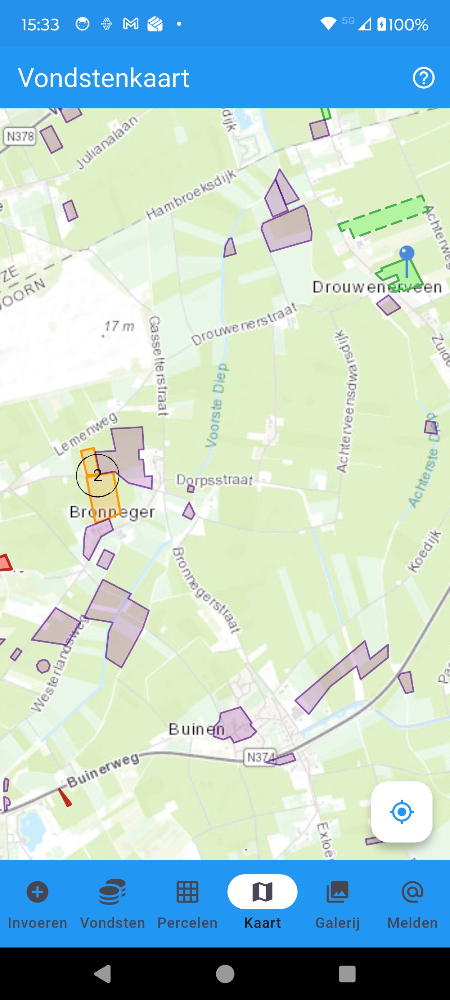
Vondsten en percelen op de kaart
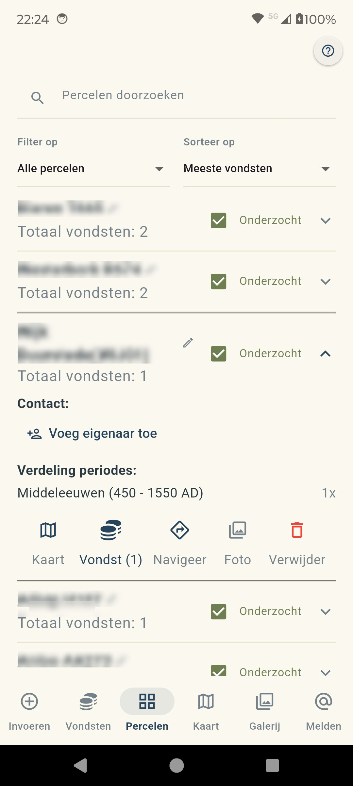
Perceelbeheer
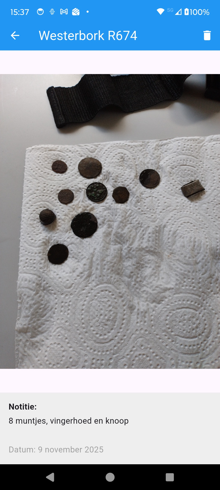
Foto's per perceel
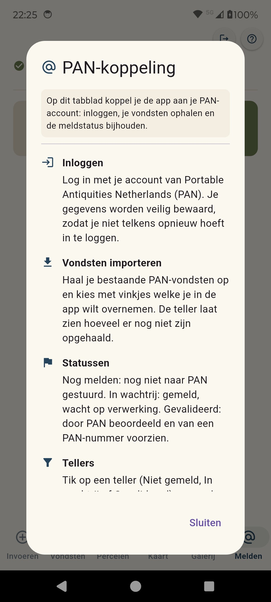
Uitleg op elk scherm
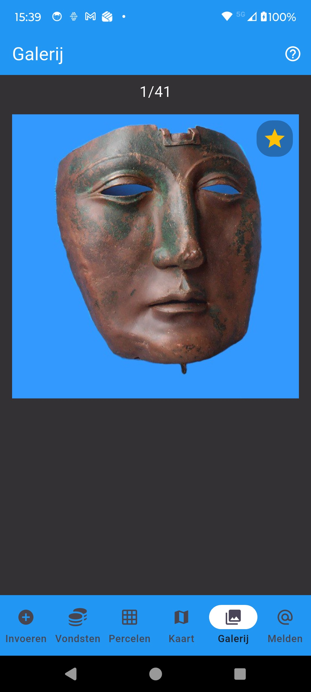
Fotogalerij
Zoekapp is rechtstreeks gekoppeld aan PAN, de hoofddatabase voor archeologische vondsten in Nederland.
Voor muntvondsten stuurt PAN gegevens automatisch door aan Numis; apart melden daar is niet nodig. Archis (RCE) is vooral het register voor professionele archeologie; voor particuliere zoekers wordt PAN op termijn het meldpunt. Numis en Archis zijn niet rechtstreeks gekoppeld aan de app.
De app is momenteel tussen testversies in. Zodra iOS en Android weer beschikbaar zijn, vind je hier de downloadlinks.